Mendekatkan Informasi Kesehatan kepada Keluarga Banyuwangi.
CareWangi adalah platform informasi layanan kesehatan panggilan ke rumah yang berfokus pada masyarakat Kabupaten Banyuwangi, Jawa Timur.
Mengapa CareWangi Hadir
Tidak semua orang dapat dengan mudah mendatangi fasilitas kesehatan.
Banyuwangi adalah kabupaten terluas di Pulau Jawa dengan wilayah yang membentang dari pesisir pantai hingga lereng pegunungan. Kondisi ini membuat akses menuju fasilitas kesehatan kerap menjadi tantangan, khususnya bagi lansia, keluarga dalam masa pemulihan, atau mereka yang memiliki keterbatasan gerak.
Tujuan CareWangi adalah membantu masyarakat memperoleh informasi layanan kesehatan secara lebih mudah dan dekat, sehingga keluarga dapat mengenal layanan kunjungan dokter dan perawat serta mengomunikasikan kebutuhan dari rumah.
Prinsip dalam Menyampaikan Informasi
Cara CareWangi berupaya menyajikan informasi kepada masyarakat.
Humanis
Menempatkan empati, kesabaran, dan kenyamanan pasien serta keluarga sebagai perhatian utama dalam setiap informasi.
Mudah Diakses
Membantu masyarakat yang kesulitan bepergian agar tetap dapat mengenal layanan kesehatan di rumah.
Terbuka dan Jelas
Menyampaikan alur komunikasi dan batasan layanan dengan jujur, menggunakan bahasa sederhana.

Kabupaten Banyuwangi, Jawa Timur
Saat ini CareWangi berfokus menyajikan informasi layanan kesehatan untuk wilayah Kabupaten Banyuwangi, Jawa Timur. Fokus ini dipilih agar komunikasi dan pemahaman terhadap kebutuhan masyarakat setempat dapat terjaga.
Wilayah di luar Kabupaten Banyuwangi belum termasuk dalam cakupan informasi layanan saat ini.
Ingin Mengenal Layanan yang Tersedia?
Pelajari informasi kunjungan dokter dan perawat, atau hubungi CareWangi untuk informasi lebih lanjut.